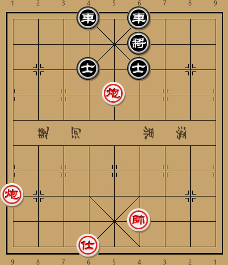
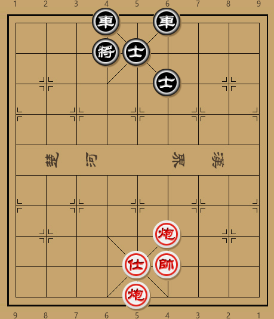
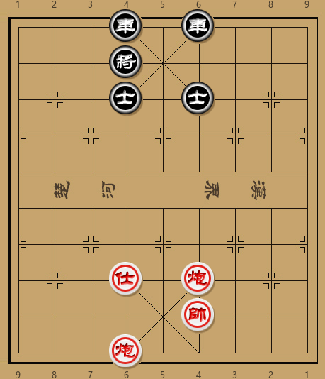
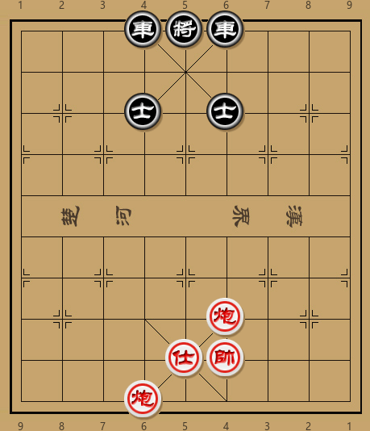

One minute
排局-06

3r1r3/5k3/3a1a3/4C4/9/9/9/C8/5K3/3A5 w
如图形式，红方双炮巧妙腾挪，迫使黑方子力自相堵塞，最终一举获胜。
此局的进攻思路比较直接，运炮叫将，利用黑士自相阻塞，重炮或者闷宫而胜。
- 炮九平四 将６平５
- 炮五退六！
红方退炮引而不发，伏有士六进五， 将5平4，炮四平六，士4退5，炮五平六重炮杀。黑方只有先将5平4才能解杀，红方则士六进五追杀：
- …… 将５平４
- 仕六进五 士４退５
黑方退士也是仅有的解着。如图形式，直观的攻法是架炮做杀，但均难以奏效。试演两变如下：

a.
- 炮四平六 将４进１
- 帅四进一 车４平３
- 帅四平五 车３进９
红方无杀，黑方胜势
b.
- 炮五平六 将４进１
- 仕五进六 将４平５
红方无杀，黑方胜势
正确的走法是先士五进六做准备。细看之下，其实这是叫杀，演变如下：
- 仕五进六 车４平３？
- 炮五平六 士５进４
- 仕六退五 将４平５
- 炮六平五 将５平４
- 炮四平六 士４退５
- 炮五平六 重炮胜
此路攻法虽是连杀，但需要来回运炮，粗看之下不易发现，可以算作此局的核心。
仕五进六扬士之后，黑方无暇挪车。最顽强的防守是先将4进1，当然红方辗转腾挪，攻势依然紧凑：
- 仕五进六 将４进１
- 帅四平五！ 将４退１
- 炮五平六 士５进４
- 帅五平四！

以上着法，红方先进帅做杀，逼黑方下将，而后平炮打将，待黑方扬士时候再出帅，次序井然。注意此时红方仍然威胁士六退五然后连杀。
- …… 将４平５
- 仕六退五 将５退１

红方出帅，黑方顺势占中解杀。然而红方一手士六退五继续做杀，此时四六两路均已被控制，黑方只有坐将求生，但仍难免被重炮：
- 炮六平五 士６退５
- 仕五退六 士５进６
- 炮四平五
从开始的局面看，谁又能想到最后黑将会在原位被擒住呢？
Read other posts